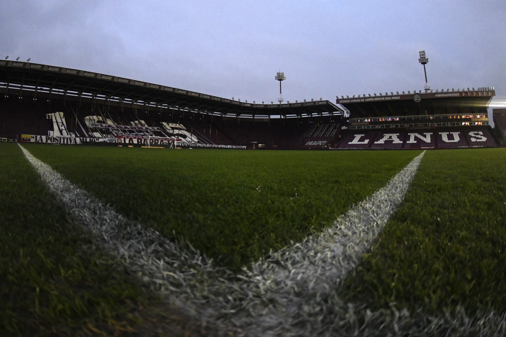
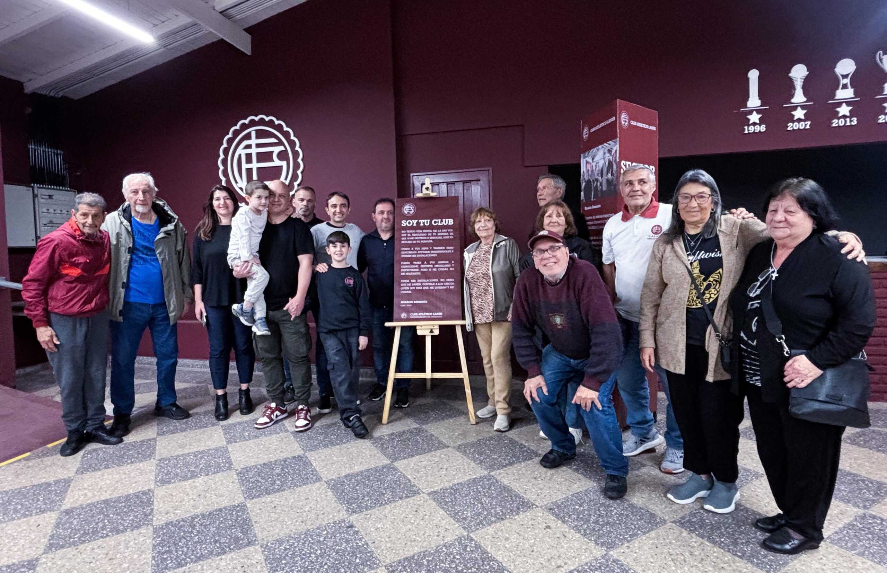

Un Diseño que Inspira
La nueva camiseta del Club Atlético Lanús representa el orgullo y la historia del club. En esta presentación oficial, los fanáticos tendrán la oportunidad de descubrir el diseño y conocer el proceso de creación de esta prenda que simboliza nuestra identidad.
Actividades de la Presentación
- Desfile de la nueva camiseta con jugadores
- Conferencia de prensa y entrevistas
- Zona de venta exclusiva de la nueva camiseta
- Espectáculo audiovisual sobre la historia del club
Detalles del Evento
El evento se llevará a cabo en el Estadio Granate y comenzará a las 18:00 horas. Las puertas estarán abiertas desde las 16:30 horas para que los fanáticos puedan disfrutar de las actividades previas.
Zona Exclusiva para Socios
Los socios del club tendrán acceso a una zona especial con beneficios exclusivos, como descuentos en la compra de la nueva camiseta y la oportunidad de interactuar con jugadores del equipo.
Recomendaciones
- Llega temprano para disfrutar de todas las actividades.
- Lleva efectivo o tarjeta para adquirir productos oficiales.
- Usa ropa cómoda y sigue las indicaciones del personal del evento.
Únete a nosotros en esta noche especial y descubre cómo nuestra nueva camiseta se convertirá en un símbolo de pasión y orgullo para todos los granates. ¡Vamos Lanús!